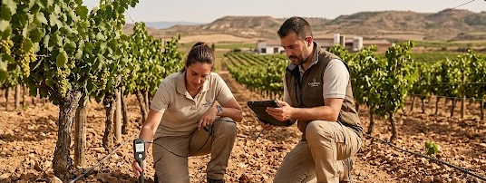

La naturaleza es sabia, pero los tiempos están cambiando a un ritmo sin precedentes. La sequía prolifera y las temperaturas medias de Cariñena han aumentado un grado en la última década. Para preservar la identidad de nuestros vinos, la innovación ya no es una opción, sino una necesidad vital.
La empresa invierte fuertemente en nuevas técnicas de microirrigación y gestión del suelo para proteger tanto la cantidad como, más importante aún, la calidad organoléptica de nuestras variedades autóctonas, con la uva Garnacha a la cabeza.
El viñedo es el reflejo directo del clima del año. En Tierra Vieja hemos analizado los patrones de los últimos veinte años para comprender cómo el calentamiento global afecta la brotación, la maduración alcohólica y la retención de acidez de las bayas. Nos enfrentamos a vendimias cada vez más tempranas, lo que supone un reto para mantener la frescura característica de nuestros vinos.
"No podemos luchar contra el clima, pero sí podemos escuchar a la viña y brindarle las herramientas para que sea más resiliente. La tecnología y el conocimiento tradicional deben caminar de la mano." — Javier Montalvo, Ingeniero Agrónomo Jefe de Tierra Vieja
Ejes estratégicos de adaptación
Para hacer frente al nuevo escenario climático, Tierra Vieja ha implementado en los últimos tres años un plan de innovación tecnológica agrícola basado en tres ejes fundamentales y sostenibles:
Microirrigación Inteligente
Sistemas de riego por goteo subterráneo controlados por sensores de humedad del suelo. Evita la evaporación superficial y reduce el consumo hídrico en un 35%.
Cubiertas Vegetales
Mantenemos pastos y flora autóctona entre las hileras de vides. Esto reduce drásticamente la temperatura del suelo en verano y previene la erosión durante lluvias torrenciales.
Poda Tardía
Retrasamos los tiempos de poda en invierno para proteger los brotes de heladas tardías extremas y demorar el ciclo madurativo hacia semanas más frescas en septiembre.
Preservando la identidad de Cariñena
Todas estas técnicas tienen un único objetivo: lograr que la uva alcance simultáneamente la madurez fenólica (los taninos y aromas) y la madurez alcohólica (los azúcares). Cuando el calor es extremo, el azúcar sube muy rápido y el aroma se queda rezagado. Al proteger del estrés térmico a las vides conseguimos equilibrar ese desarrollo.
Los resultados ya son palpables. La añada 2025, a pesar de ser una de las más calurosas registradas en Aragón, vio recompensados nuestros esfuerzos con mostos de una acidez vibrante y una carga aromática profunda que garantizarán una excelente guarda en barrica.
